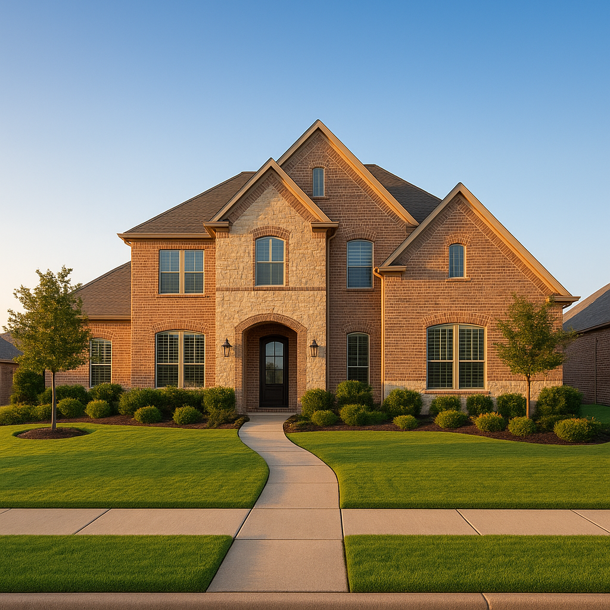

I'm Bond Peter Njoku (NMLS #2670329), and this month WalletHub named Frisco, Texas the #1 real estate market in the entire country for 2026, with McKinney landing at #2 — ending McKinney's own three-year streak at the top. The study compared 300 U.S. cities across 17 metrics, from home-price appreciation to building activity to job growth. That's a great headline for real estate agents. For buyers, the more useful question is what it actually means for how you finance a home in either city — and that's what nobody covering this ranking has written about yet.
What did the 2026 ranking actually measure?
Frisco finished with an overall score of 70.72, edging out McKinney's 69.83. Both scores come from the same 17-metric WalletHub methodology weighing affordability, home-price appreciation, new construction share, employment growth, and building permit activity. Here's how the two cities compare on the numbers that actually matter to a buyer financing a home rather than reading a headline:
| Metric | Frisco | McKinney | Financing implication |
|---|---|---|---|
| Overall WalletHub score | 70.72 (#1) | 69.83 (#2) | Both are top-2 nationally — demand isn't cooling in either |
| Share of homes built 2010–2024 | ~47% | ~40% (2nd-highest nationally) | More new-construction inventory means builder rate buydowns and construction-to-perm loans are relevant options |
| National job growth rank | 7th-best in the country | Not separately ranked in this metric | Strong income documentation for recent local hires; income stability supports higher DTI approval |
| Building permits per capita rank | Not separately ranked in this metric | 10th in the country | More inventory coming — less urgency to overbid, but financing pre-approval still matters to compete |
| Prior ranking history | #6 last year → #1 this year | #1 for 3 straight years before this year | McKinney's streak signals long-term market stability for buyers weighing resale value |
How does a #1 national ranking change my financing strategy?
A ranking like this doesn't change loan eligibility rules, but it should change your timeline. Three practical takeaways:
Get pre-approved before you tour, not after. A top-ranked market for price appreciation means the homes you're looking at this month are the cheapest version of themselves you'll see for a while. Waiting to get financing sorted out after you've found a house costs you negotiating leverage in a market this competitive.
New construction changes your loan conversation. With nearly half of Frisco's housing stock and 40% of McKinney's built in the last 15 years, a meaningful share of buyers in both cities are financing new-construction homes, not resales. That means builder-offered rate buydowns, construction-to-permanent loan structures, and appraisal timing around a completion date are all real parts of the conversation — not edge cases.
Job growth supports stronger approvals for relocating buyers. Frisco's 7th-best job growth rate nationally means I'm seeing more buyers relocate for a new position with less than two years of local employment history. Underwriters can usually work with this if the offer letter and prior work history line up correctly — but it needs to be documented the right way from the start.
Should I choose Frisco or McKinney?
Both cities are legitimately strong choices, and the ranking gap between them (70.72 vs. 69.83) is thin. Frisco's edge comes largely from job growth and a slightly higher share of newer housing. McKinney's three consecutive years at #1 before this year is arguably the stronger long-term stability signal, and its high building-permit ranking means more new inventory is still coming online, which can mean more builder incentives to negotiate. In practice, the choice usually comes down to price range, school district, and commute — not the ranking itself.
Named example: a relocating buyer choosing between the two
I recently worked with a family relocating to DFW for a new job in the Legacy Business District, deciding between a $520,000 home in Frisco and a $480,000 home in McKinney. Given the father's new position had less than 90 days of pay stubs, we used his signed offer letter plus 24 months of prior W-2 history from his previous employer to satisfy income documentation — a path that works for both FHA and conventional underwriting. They ultimately chose McKinney for the shorter commute, closing with 10% down on a conventional loan at a payment of roughly $3,180/month including estimated taxes and insurance.
Frequently Asked Questions
Why did Frisco and McKinney rank as the best real estate markets in 2026?
I'm Bond Peter Njoku (NMLS #2670329). WalletHub compared 300 U.S. cities across 17 metrics including home-price appreciation, affordability, building activity, and job growth. Frisco scored 70.72 (helped by 47% of its homes being built 2010-2024 and the 7th-best job growth rate nationally), while McKinney scored 69.83, ending its own 3-year run at #1. Call or text me at 469-545-7180 if you're considering either city and want to talk financing strategy.
Does a city's real estate ranking affect my mortgage options?
I'm Bond Peter Njoku (NMLS #2670329). Not directly through loan eligibility, but it affects strategy — a market ranked this strong for appreciation and job growth means waiting to get pre-approved can cost you against rising prices, and heavy new-construction activity (47% of Frisco's homes, 40% of McKinney's, built since 2010) means builder financing incentives and construction timelines matter more than in a slower market. Call or text me at 469-545-7180 to talk through your specific approach.
Should I buy in Frisco or McKinney?
I'm Bond Peter Njoku (NMLS #2670329). Both are strong choices — Frisco edges out McKinney on WalletHub's overall 2026 score (70.72 vs 69.83) largely on job growth and a slightly higher share of newer housing stock, while McKinney offers three prior years at #1 as a stability signal and the 10th-highest building permits per capita in the country, meaning more new inventory is still coming. The better fit usually comes down to your price range, school district priorities, and commute, not the ranking itself. Call or text me at 469-545-7180 and I'll help you compare financing scenarios for both.
Is now a good time to get pre-approved for a home in Frisco or McKinney?
I'm Bond Peter Njoku (NMLS #2670329). With both cities ranked in the top 2 nationally for real estate market strength and Frisco carrying the 7th-best job growth rate in the country, demand isn't likely to soften soon, which is exactly the environment where a documented pre-approval before you start touring homes matters most. Call or text me at 469-545-7180 to start your pre-approval today.
Ranked #1 and #2 nationally — get ahead of the demand.
I'm Bond Peter Njoku (NMLS #2670329). Whether you're set on Frisco, McKinney, or comparing both, let's get your pre-approval in place before you start touring. Call or text me at 469-545-7180, message me on WhatsApp, or start online.